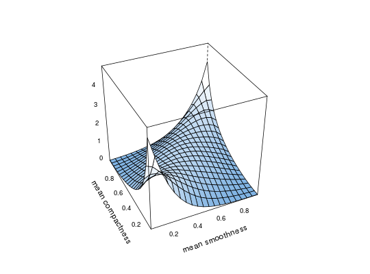

This package provides fast implementations of kernel estimators for the copula density. Due to its several plotting options it is particularly useful for the exploratory analysis of dependece structures. It can be further used for flexible nonparametric estimation of copula densities and resampling.
The function kdecop can be used to estimate a copula density
with a number of popular kernel estimators. The density estimate can be
evaluated on arbitrary points with dkdecop;
the cdf with pkdecop. Furthermore, synthetic
data can be simulated with rkdecop, and
several plot options are provided by
plot.kdecopula.
Gijbels, I. and Mielniczuk, J. (1990). Estimating the density of a copula function. Communications in Statistics - Theory and Methods, 19(2):445-464. Charpentier, A., Fermanian, J.-D., and Scaillet, O. (2006). The estimation of copulas: Theory and practice. In Rank, J., editor, Copulas: From theory to application in finance. Risk Books. Geenens, G., Charpentier, A., and Paindaveine, D. (2017). Probit transformation for nonparametric kernel estimation of the copula density. Bernoulli, 23(3), 1848-1873. Nagler, T. (2014). Kernel Methods for Vine Copula Estimation. Master's Thesis, Technische Universitaet Muenchen, https://mediatum.ub.tum.de/node?id=1231221 Wen, K. and Wu, X. (2015). Transformation-Kernel Estimation of the Copula Density, Working paper, http://agecon2.tamu.edu/people/faculty/wu-ximing/agecon2/public/copula.pdf
## load data and transform with empirical cdf data(wdbc) udat <- apply(wdbc[, -1], 2, function(x) rank(x)/(length(x)+1)) ## estimation of copula density of variables 5 and 6 dens.est <- kdecop(udat[, 5:6]) plot(dens.est)#> [1] 1.28916#> [1] 0.09779868#> [,1] [,2] #> [1,] 0.7610533573 0.8271179199 #> [2,] 0.4041967902 0.4638977051 #> [3,] 0.2053977780 0.2073669434 #> [4,] 0.5872954172 0.4972229004 #> [5,] 0.5982019205 0.4103088379 #> [6,] 0.0692912894 0.0370178223 #> [7,] 0.7970514507 0.9189758301 #> [8,] 0.7656792477 0.7934265137 #> [9,] 0.8335777691 0.6890563965 #> [10,] 0.0087148712 0.2012023926 #> [11,] 0.5998695758 0.8530578613 #> [12,] 0.4739240983 0.6594543457 #> [13,] 0.3909496078 0.5278625488 #> [14,] 0.3192829671 0.2433776855 #> [15,] 0.0612197765 0.0475769043 #> [16,] 0.3895407165 0.1076965332 #> [17,] 0.7866776655 0.3297424316 #> [18,] 0.7172990940 0.8081970215 #> [19,] 0.0804277039 0.0450744629 #> [20,] 0.4185216760 0.7687683105 #> [21,] 0.0710566137 0.5154724121 #> [22,] 0.5928492618 0.6145324707 #> [23,] 0.6632328879 0.9117736816 #> [24,] 0.5440444550 0.8630676270 #> [25,] 0.7820210685 0.4262390137 #> [26,] 0.6080353935 0.6875915527 #> [27,] 0.0891743579 0.2198181152 #> [28,] 0.9423624962 0.9028625488 #> [29,] 0.9064601830 0.7273864746 #> [30,] 0.7149036885 0.2721252441 #> [31,] 0.6405922438 0.6737365723 #> [32,] 0.4762322318 0.2807312012 #> [33,] 0.0271144388 0.0098571777 #> [34,] 0.4405449526 0.5940246582 #> [35,] 0.3682133837 0.3725280762 #> [36,] 0.6049453910 0.2776794434 #> [37,] 0.8440193466 0.9571838379 #> [38,] 0.7013902559 0.5763244629 #> [39,] 0.6458006303 0.2312927246 #> [40,] 0.2811636641 0.4590759277 #> [41,] 0.7462185828 0.6654968262 #> [42,] 0.8269547133 0.7469177246 #> [43,] 0.7042312967 0.7861633301 #> [44,] 0.2399817186 0.1792907715 #> [45,] 0.4711366997 0.2724914551 #> [46,] 0.1010834749 0.3922424316 #> [47,] 0.7327638289 0.8000793457 #> [48,] 0.7683000411 0.8575744629 #> [49,] 0.9567792637 0.8338928223 #> [50,] 0.3371670851 0.3335266113 #> [51,] 0.2775082460 0.3695983887 #> [52,] 0.3992167090 0.2403259277 #> [53,] 0.2399940465 0.0435485840 #> [54,] 0.3559750868 0.1285705566 #> [55,] 0.3122013945 0.2595520020 #> [56,] 0.8873295982 0.5293884277 #> [57,] 0.2135707894 0.4826965332 #> [58,] 0.3280287227 0.3619079590 #> [59,] 0.6603286504 0.7773132324 #> [60,] 0.8725790735 0.7235412598 #> [61,] 0.6705935081 0.7206115723 #> [62,] 0.5755505334 0.6882019043 #> [63,] 0.2578534167 0.5581970215 #> [64,] 0.0859077212 0.3834533691 #> [65,] 0.8432447175 0.8190002441 #> [66,] 0.0971260425 0.0486755371 #> [67,] 0.4593260738 0.6502990723 #> [68,] 0.0162949979 0.0036926270 #> [69,] 0.6259620539 0.7885437012 #> [70,] 0.4616786723 0.6989440918 #> [71,] 0.3449301305 0.1061096191 #> [72,] 0.7563184935 0.8917541504 #> [73,] 0.0777541935 0.1302185059 #> [74,] 0.3175391844 0.6601257324 #> [75,] 0.1823221010 0.7068786621 #> [76,] 0.9610607689 0.8686828613 #> [77,] 0.7961235400 0.5664367676 #> [78,] 0.9786097184 0.9820251465 #> [79,] 0.0948827385 0.3409729004 #> [80,] 0.6655356605 0.5159606934 #> [81,] 0.8575061753 0.4934997559 #> [82,] 0.2855339842 0.2337951660 #> [83,] 0.5482235779 0.9006042480 #> [84,] 0.2021868916 0.1676940918 #> [85,] 0.9424058979 0.5907287598 #> [86,] 0.6547804172 0.1960144043 #> [87,] 0.9437307753 0.7480773926 #> [88,] 0.0701684081 0.0392150879 #> [89,] 0.0719734179 0.1036071777 #> [90,] 0.3462586517 0.2958679199 #> [91,] 0.8352655754 0.8746032715 #> [92,] 0.4480053384 0.5688171387 #> [93,] 0.8674794107 0.7432556152 #> [94,] 0.0227774621 0.0822448730 #> [95,] 0.9955748185 0.9275817871 #> [96,] 0.1596418733 0.5376892090 #> [97,] 0.0383673012 0.0634460449 #> [98,] 0.6627989130 0.4732360840 #> [99,] 0.0006031182 0.0433044434 #> [100,] 0.4749383451 0.6204528809 #> [101,] 0.6205798867 0.7278747559 #> [102,] 0.4680661936 0.8324279785 #> [103,] 0.4308283075 0.6451721191 #> [104,] 0.4871230158 0.4756164551 #> [105,] 0.7445687919 0.8605041504 #> [106,] 0.2360763352 0.2044982910 #> [107,] 0.4964767820 0.6288146973 #> [108,] 0.1320909695 0.3309631348 #> [109,] 0.6634282195 0.6883239746 #> [110,] 0.2176160105 0.1258239746 #> [111,] 0.7421557566 0.7640686035 #> [112,] 0.0377875306 0.1402282715 #> [113,] 0.6517971945 0.6930847168 #> [114,] 0.3343856737 0.1936340332 #> [115,] 0.2210780880 0.1754455566 #> [116,] 0.0211261250 0.1677551270 #> [117,] 0.8042616358 0.7002258301 #> [118,] 0.9970271843 0.9944763184 #> [119,] 0.3619134063 0.4012756348 #> [120,] 0.9349451840 0.6212463379 #> [121,] 0.6578612949 0.8133239746 #> [122,] 0.5135570115 0.7016906738 #> [123,] 0.5725584084 0.3177185059 #> [124,] 0.7705904548 0.5909118652 #> [125,] 0.0302785628 0.0290222168 #> [126,] 0.1018984518 0.0404357910 #> [127,] 0.3047660331 0.4748229980 #> [128,] 0.4350371023 0.5244445801 #> [129,] 0.4372283549 0.2466735840 #> [130,] 0.2706178317 0.2741394043 #> [131,] 0.8878458668 0.5975036621 #> [132,] 0.8946939674 0.3653259277 #> [133,] 0.5168379021 0.5008850098 #> [134,] 0.5988298485 0.9418029785 #> [135,] 0.6544663417 0.2663879395 #> [136,] 0.0440429931 0.0330505371 #> [137,] 0.9015619967 0.6442565918 #> [138,] 0.1961612394 0.3576354980 #> [139,] 0.8069389474 0.5606384277 #> [140,] 0.4423942689 0.3404235840 #> [141,] 0.7311036342 0.7756042480 #> [142,] 0.3727998415 0.2303771973 #> [143,] 0.0690959990 0.3663635254 #> [144,] 0.4314967215 0.5763854980 #> [145,] 0.5541634208 0.5729675293 #> [146,] 0.1082175858 0.0411682129 #> [147,] 0.9023379346 0.6843566895 #> [148,] 0.0285656999 0.3887634277 #> [149,] 0.0984125354 0.0538024902 #> [150,] 0.4623543960 0.8199768066 #> [151,] 0.1642614554 0.2814025879 #> [152,] 0.5129855827 0.4474182129 #> [153,] 0.9430038666 0.8735046387 #> [154,] 0.6777047657 0.5135192871 #> [155,] 0.4212413609 0.7953186035 #> [156,] 0.9164220395 0.9596252441 #> [157,] 0.5707258212 0.2388000488 #> [158,] 0.3385307593 0.5719909668 #> [159,] 0.8270793913 0.7958679199 #> [160,] 0.7520461201 0.7004089355 #> [161,] 0.2347525915 0.1757507324 #> [162,] 0.3393004651 0.9271545410 #> [163,] 0.3458746090 0.7629089355 #> [164,] 0.3021086091 0.9401550293 #> [165,] 0.6239343346 0.8384094238 #> [166,] 0.2469813547 0.6456604004 #> [167,] 0.0959985391 0.1502990723 #> [168,] 0.1879034571 0.0633850098 #> [169,] 0.0351962144 0.0409240723 #> [170,] 0.5196348189 0.6293640137 #> [171,] 0.1792204001 0.1798400879 #> [172,] 0.5736055621 0.7900695801 #> [173,] 0.6285673045 0.7209167480 #> [174,] 0.2713756422 0.2127380371 #> [175,] 0.5784195219 0.2732849121 #> [176,] 0.2323581667 0.7298278809 #> [177,] 0.1263367666 0.2534484863 #> [178,] 0.9966876509 0.9872131348 #> [179,] 0.4742830857 0.3569030762 #> [180,] 0.0902223575 0.2660217285 #> [181,] 0.2383246757 0.1647033691 #> [182,] 0.2591347448 0.1560974121 #> [183,] 0.0256695354 0.0614929199 #> [184,] 0.1755508122 0.5043029785 #> [185,] 0.6198216544 0.3435363770 #> [186,] 0.2209208584 0.3180847168 #> [187,] 0.0654076412 0.2046203613 #> [188,] 0.6448971324 0.3949279785 #> [189,] 0.3125520034 0.4809875488 #> [190,] 0.6388673016 0.8972473145 #> [191,] 0.9738753440 0.6109924316 #> [192,] 0.1625581302 0.4783020020 #> [193,] 0.5351121961 0.4239196777 #> [194,] 0.5850109290 0.8125305176 #> [195,] 0.3186254092 0.6115417480 #> [196,] 0.4680847898 0.6304016113 #> [197,] 0.6392597510 0.3108825684 #> [198,] 0.0774594981 0.0401306152 #> [199,] 0.9926149587 0.8808898926 #> [200,] 0.8661012526 0.9485778809 #> [201,] 0.8001324101 0.8935852051 #> [202,] 0.8595896708 0.6478576660 #> [203,] 0.7991610393 0.3481140137 #> [204,] 0.3298779021 0.3035583496 #> [205,] 0.4294405091 0.1075134277 #> [206,] 0.2182346880 0.2051086426 #> [207,] 0.3677461073 0.2605895996 #> [208,] 0.0344870000 0.1068420410 #> [209,] 0.9702030683 0.3599548340 #> [210,] 0.1304893538 0.1554260254 #> [211,] 0.4540142764 0.2107849121 #> [212,] 0.8555468256 0.3995666504 #> [213,] 0.1417209425 0.4911804199 #> [214,] 0.0696102362 0.1349182129 #> [215,] 0.5689389224 0.8139343262 #> [216,] 0.0603837501 0.2138366699 #> [217,] 0.7262132422 0.8278503418 #> [218,] 0.7815700525 0.7630920410 #> [219,] 0.5385576584 0.5721740723 #> [220,] 0.8573389943 0.3202819824 #> [221,] 0.3649745786 0.3467712402 #> [222,] 0.4271684550 0.6308898926 #> [223,] 0.6439271288 0.6175231934 #> [224,] 0.9404121665 0.6158142090 #> [225,] 0.0618771871 0.2030944824 #> [226,] 0.4155689573 0.7052307129 #> [227,] 0.0051456408 0.0442199707 #> [228,] 0.8239529938 0.3020935059 #> [229,] 0.6727117260 0.4696350098 #> [230,] 0.6593947276 0.8587341309 #> [231,] 0.3247091118 0.4065856934 #> [232,] 0.1002999528 0.1538391113 #> [233,] 0.4758681133 0.5873107910 #> [234,] 0.2169995694 0.7933044434 #> [235,] 0.2777440443 0.5334777832 #> [236,] 0.0114205093 0.0061340332 #> [237,] 0.5989566359 0.8470764160 #> [238,] 0.4497092732 0.3932189941 #> [239,] 0.5518206509 0.3135070801 #> [240,] 0.9262119858 0.6211242676 #> [241,] 0.5830144302 0.8258361816 #> [242,] 0.0745444160 0.1726379395 #> [243,] 0.1032387409 0.2761535645 #> [244,] 0.9288374304 0.6651306152 #> [245,] 0.2535112784 0.0144348145 #> [246,] 0.2286500654 0.4277038574 #> [247,] 0.3285192824 0.9143981934 #> [248,] 0.3804786857 0.3616027832 #> [249,] 0.2776129905 0.3449401855 #> [250,] 0.6321895614 0.6074523926 #> [251,] 0.3052195050 0.4561462402 #> [252,] 0.2717588835 0.4214172363 #> [253,] 0.3748433900 0.4441833496 #> [254,] 0.3837829567 0.4090270996 #> [255,] 0.8264057857 0.8622741699 #> [256,] 0.4464889178 0.7662658691 #> [257,] 0.7074392296 0.8813781738 #> [258,] 0.7924021243 0.8061828613 #> [259,] 0.8125419780 0.8760070801 #> [260,] 0.3924566919 0.5165710449 #> [261,] 0.2820363820 0.3537902832 #> [262,] 0.9845937523 0.7881774902 #> [263,] 0.2571115706 0.7016296387 #> [264,] 0.8625257672 0.9617614746 #> [265,] 0.7211722464 0.5855407715 #> [266,] 0.7713756431 0.6576843262 #> [267,] 0.0558311234 0.0629577637 #> [268,] 0.1135506821 0.2460021973 #> [269,] 0.7269460193 0.7632141113 #> [270,] 0.6284753787 0.3066711426 #> [271,] 0.7781026559 0.9977111816 #> [272,] 0.2966136546 0.0263977051 #> [273,] 0.7876449770 0.4841613770 #> [274,] 0.9004197002 0.6820373535 #> [275,] 0.4631907877 0.2818298340 #> [276,] 0.5115403302 0.4950866699 #> [277,] 0.1755862501 0.2960510254 #> [278,] 0.3461716371 0.6757507324 #> [279,] 0.6188092704 0.7918395996 #> [280,] 0.2435689103 0.3550720215 #> [281,] 0.9439794198 0.9185485840 #> [282,] 0.0678389906 0.0735168457 #> [283,] 0.8196045570 0.5275573730 #> [284,] 0.9256666852 0.9822082520 #> [285,] 0.3169466006 0.2286071777 #> [286,] 0.3642891317 0.2539367676 #> [287,] 0.0626275102 0.2462463379 #> [288,] 0.4839432572 0.8819274902 #> [289,] 0.0407341924 0.0066223145 #> [290,] 0.8937337908 0.5473937988 #> [291,] 0.5749677678 0.6973571777 #> [292,] 0.0891026461 0.4787902832 #> [293,] 0.8867228325 0.9642639160 #> [294,] 0.2830173017 0.6392517090 #> [295,] 0.4191883085 0.8457946777 #> [296,] 0.2401067407 0.1670837402 #> [297,] 0.0596787019 0.1424865723 #> [298,] 0.0316268071 0.1786804199 #> [299,] 0.6449128392 0.4105529785 #> [300,] 0.4024655328 0.5630798340 #> [301,] 0.6770767714 0.3891906738 #> [302,] 0.3686009985 0.7961730957 #> [303,] 0.1941303359 0.1919860840 #> [304,] 0.4015346332 0.6756286621 #> [305,] 0.7495021557 0.2353820801 #> [306,] 0.6770705269 0.4810485840 #> [307,] 0.2764910853 0.6238098145 #> [308,] 0.3227310213 0.7226257324 #> [309,] 0.4463458364 0.9404602051 #> [310,] 0.5234971840 0.6801452637 #> [311,] 0.4815215608 0.8907775879 #> [312,] 0.2288646467 0.0728454590 #> [313,] 0.6375797233 0.6339416504 #> [314,] 0.0152485273 0.0990905762 #> [315,] 0.9476845528 0.9526672363 #> [316,] 0.4079208942 0.7548522949 #> [317,] 0.2134099938 0.6380920410 #> [318,] 0.8091877007 0.9004821777 #> [319,] 0.4088516871 0.3581237793 #> [320,] 0.1651539200 0.0997619629 #> [321,] 0.0744381770 0.2610778809 #> [322,] 0.3040642054 0.2483825684 #> [323,] 0.3000516156 0.3609924316 #> [324,] 0.1778764790 0.3656311035 #> [325,] 0.8972952638 0.9923400879 #> [326,] 0.0675321936 0.1734924316 #> [327,] 0.2369425748 0.5126037598 #> [328,] 0.4341058761 0.1540222168 #> [329,] 0.5578348825 0.5520935059 #> [330,] 0.9432024090 0.9738464355 #> [331,] 0.8316059746 0.9093322754 #> [332,] 0.8448522747 0.8125305176 #> [333,] 0.2500771787 0.3177795410 #> [334,] 0.1257986405 0.3125915527 #> [335,] 0.8696372516 0.9785461426 #> [336,] 0.1814510440 0.1437683105 #> [337,] 0.9932996156 0.9850158691 #> [338,] 0.9990619693 0.9948425293 #> [339,] 0.9590883413 0.7550964355 #> [340,] 0.1424103314 0.0444641113 #> [341,] 0.0629147720 0.1180114746 #> [342,] 0.2419294547 0.4749450684 #> [343,] 0.9217615952 0.6491394043 #> [344,] 0.4213486642 0.7174987793 #> [345,] 0.3457389178 0.1244812012 #> [346,] 0.7714468315 0.6167907715 #> [347,] 0.6879309283 0.7806701660 #> [348,] 0.4799975308 0.4687805176 #> [349,] 0.7638129571 0.5301818848 #> [350,] 0.9054327118 0.3636779785 #> [351,] 0.0368972195 0.1675109863 #> [352,] 0.5342721606 0.2871398926 #> [353,] 0.8862361724 0.9310607910 #> [354,] 0.2643959185 0.5488586426 #> [355,] 0.0580341807 0.1293640137 #> [356,] 0.7437887632 0.8062438965 #> [357,] 0.8651094916 0.5586242676 #> [358,] 0.5077364186 0.7702941895 #> [359,] 0.9580842140 0.9822692871 #> [360,] 0.7568701094 0.8661804199 #> [361,] 0.4538262242 0.5747375488 #> [362,] 0.9777245361 0.9526062012 #> [363,] 0.4708268393 0.2826843262 #> [364,] 0.4772812461 0.3143615723 #> [365,] 0.6187299686 0.4793395996 #> [366,] 0.5949959222 0.7164001465 #> [367,] 0.5582414062 0.0234680176 #> [368,] 0.4912677805 0.3547668457 #> [369,] 0.9338750411 0.6271057129 #> [370,] 0.2030410024 0.2262268066 #> [371,] 0.5297627307 0.8322448730 #> [372,] 0.9196131709 0.6470031738 #> [373,] 0.6572462688 0.6445617676 #> [374,] 0.2345730471 0.1646423340 #> [375,] 0.5524962214 0.1799011230 #> [376,] 0.9083364371 0.9830627441 #> [377,] 0.7869991432 0.7354431152 #> [378,] 0.2085872288 0.5035095215 #> [379,] 0.6404605054 0.1223449707 #> [380,] 0.9636760256 0.9275817871 #> [381,] 0.7629273154 0.7823181152 #> [382,] 0.7538408835 0.5818176270 #> [383,] 0.5476590304 0.8979187012 #> [384,] 0.5356092483 0.7612609863 #> [385,] 0.2339138386 0.8267517090 #> [386,] 0.6272383083 0.8634338379 #> [387,] 0.3898379575 0.4850769043 #> [388,] 0.5284277138 0.5138854980 #> [389,] 0.2829360426 0.1659851074 #> [390,] 0.5921380774 0.7691955566 #> [391,] 0.6986362368 0.3405456543 #> [392,] 0.9765042379 0.9873962402 #> [393,] 0.1079504245 0.4440002441 #> [394,] 0.1706319826 0.1817321777 #> [395,] 0.2280113136 0.5343322754 #> [396,] 0.2882029240 0.2585754395 #> [397,] 0.9435818703 0.4369201660 #> [398,] 0.6009529759 0.4974670410 #> [399,] 0.3609716413 0.4667663574 #> [400,] 0.4214927382 0.2436828613 #> [401,] 0.0651322615 0.0044250488 #> [402,] 0.6659616583 0.5986022949 #> [403,] 0.9351864639 0.8642883301 #> [404,] 0.5282096376 0.5064392090 #> [405,] 0.8007435398 0.7883605957 #> [406,] 0.0621890523 0.2897033691 #> [407,] 0.6326991725 0.4380187988 #> [408,] 0.6750799597 0.6653137207 #> [409,] 0.6913678481 0.6326599121 #> [410,] 0.8090493772 0.9403381348 #> [411,] 0.8100297120 0.8798522949 #> [412,] 0.0971887677 0.0404357910 #> [413,] 0.2033564022 0.2272644043 #> [414,] 0.1403016127 0.0809631348 #> [415,] 0.6668004985 0.4139709473 #> [416,] 0.1282191004 0.0299377441 #> [417,] 0.1054707929 0.0885314941 #> [418,] 0.5090210296 0.4352111816 #> [419,] 0.7527861267 0.3275451660 #> [420,] 0.4914388724 0.5127868652 #> [421,] 0.2120550543 0.1763610840 #> [422,] 0.3902097289 0.4200134277 #> [423,] 0.6558796840 0.9920349121 #> [424,] 0.4903439877 0.0274353027 #> [425,] 0.4889079346 0.6662292480 #> [426,] 0.7953199698 0.7314147949 #> [427,] 0.0951448858 0.0001525879 #> [428,] 0.2265723194 0.2608947754 #> [429,] 0.2397561402 0.2845764160 #> [430,] 0.7040934509 0.7948303223 #> [431,] 0.0711367580 0.1929016113 #> [432,] 0.0578921272 0.0728454590 #> [433,] 0.4664422506 0.4202575684 #> [434,] 0.1619617057 0.3941955566 #> [435,] 0.5231939680 0.6337585449 #> [436,] 0.9763448837 0.8092956543 #> [437,] 0.0787638216 0.1659851074 #> [438,] 0.0320575640 0.0726623535 #> [439,] 0.4092588359 0.7973937988 #> [440,] 0.1814671084 0.0241394043 #> [441,] 0.7457828394 0.8764343262 #> [442,] 0.0255023669 0.0051574707 #> [443,] 0.1647576755 0.5928039551 #> [444,] 0.2117753183 0.0848083496 #> [445,] 0.2433493892 0.3864440918 #> [446,] 0.0307862640 0.4825134277 #> [447,] 0.0998179701 0.0387268066 #> [448,] 0.2264552978 0.1542663574 #> [449,] 0.0955275362 0.3499450684 #> [450,] 0.2772808571 0.7585144043 #> [451,] 0.0657163549 0.4037170410 #> [452,] 0.2290135953 0.0611877441 #> [453,] 0.5757473840 0.8460998535 #> [454,] 0.7560058718 0.4707946777 #> [455,] 0.9470088866 0.7767639160 #> [456,] 0.4762912793 0.3532409668 #> [457,] 0.4243196244 0.2770080566 #> [458,] 0.0311682171 0.1560974121 #> [459,] 0.4846208007 0.7530212402 #> [460,] 0.1012415581 0.4205627441 #> [461,] 0.7129505360 0.6091003418 #> [462,] 0.0373933078 0.0428771973 #> [463,] 0.7399758566 0.5816955566 #> [464,] 0.3055186328 0.7853088379 #> [465,] 0.6196247481 0.6381530762 #> [466,] 0.0412043324 0.1426696777 #> [467,] 0.3455291858 0.7196350098 #> [468,] 0.5161452899 0.3783264160 #> [469,] 0.6448547442 0.6951599121 #> [470,] 0.4505865925 0.2583923340 #> [471,] 0.8319629389 0.7290344238 #> [472,] 0.2700196926 0.4128112793 #> [473,] 0.7612458924 0.7084045410 #> [474,] 0.5638203828 0.5256042480 #> [475,] 0.1260013853 0.0445861816 #> [476,] 0.2538703845 0.3893127441 #> [477,] 0.1630862276 0.3604431152 #> [478,] 0.3688684977 0.2808532715 #> [479,] 0.1784795113 0.5695495605 #> [480,] 0.7333615439 0.6112976074 #> [481,] 0.4734876524 0.5830993652 #> [482,] 0.8480707810 0.9064025879 #> [483,] 0.0935969558 0.2917785645 #> [484,] 0.1282760384 0.0277404785 #> [485,] 0.2792265532 0.1344299316 #> [486,] 0.8204053720 0.7668762207 #> [487,] 0.3945057234 0.5135803223 #> [488,] 0.8876022277 0.7151794434 #> [489,] 0.5942973846 0.5976257324 #> [490,] 0.2463778486 0.2693176270 #> [491,] 0.3757579522 0.1891174316 #> [492,] 0.1368529312 0.3047180176 #> [493,] 0.0986021282 0.6899108887 #> [494,] 0.6423973045 0.4432678223 #> [495,] 0.8174897328 0.8141174316 #> [496,] 0.1567231279 0.1858825684 #> [497,] 0.5118732841 0.3934631348 #> [498,] 0.7105514547 0.5843200684 #> [499,] 0.3634426207 0.4967956543 #> [500,] 0.6686055483 0.6468200684